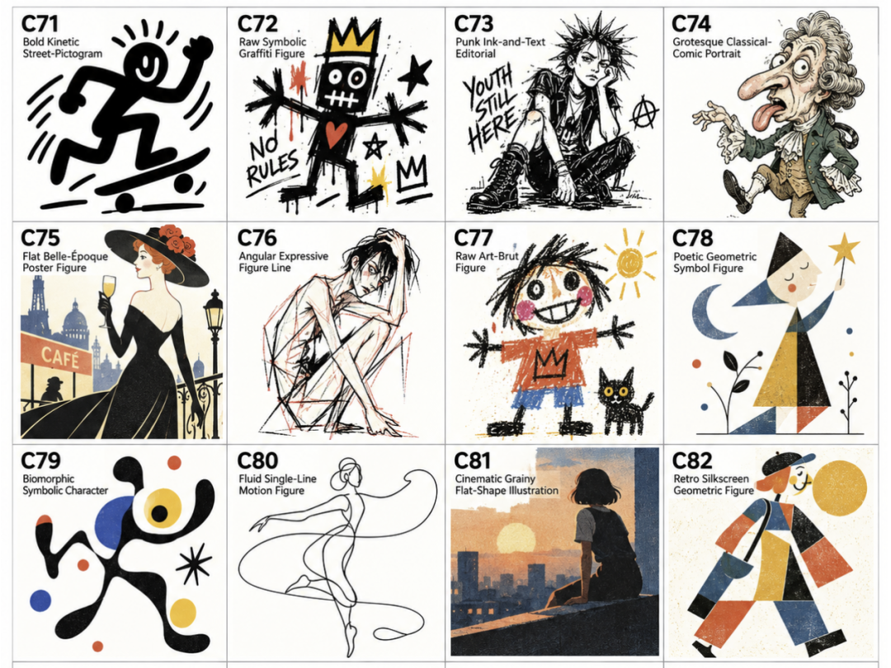
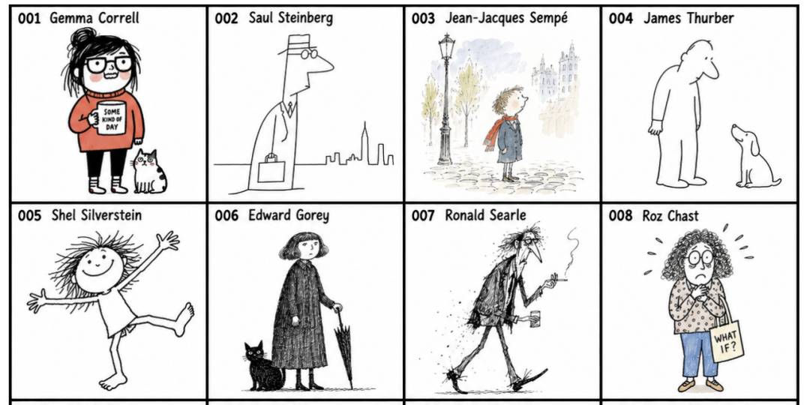
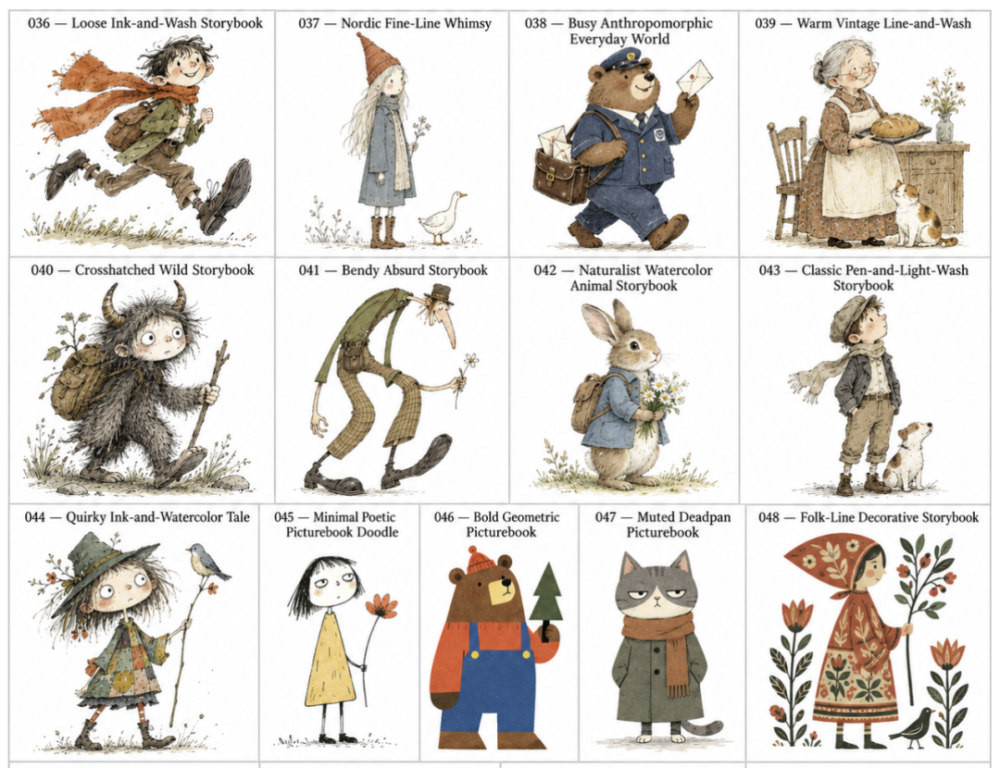
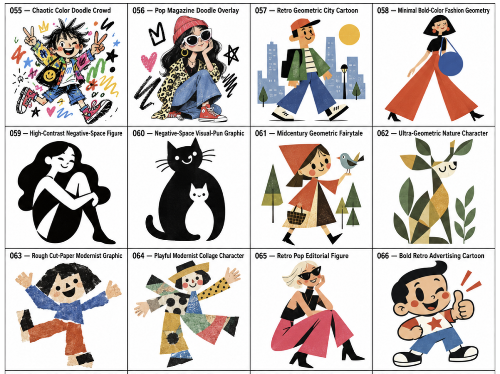
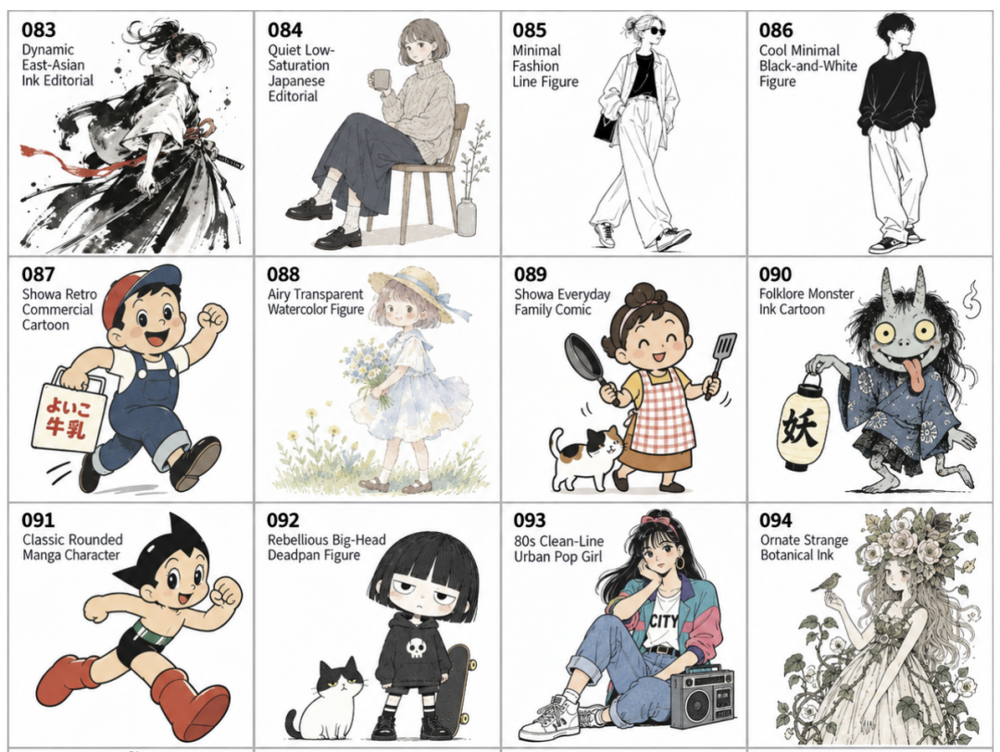
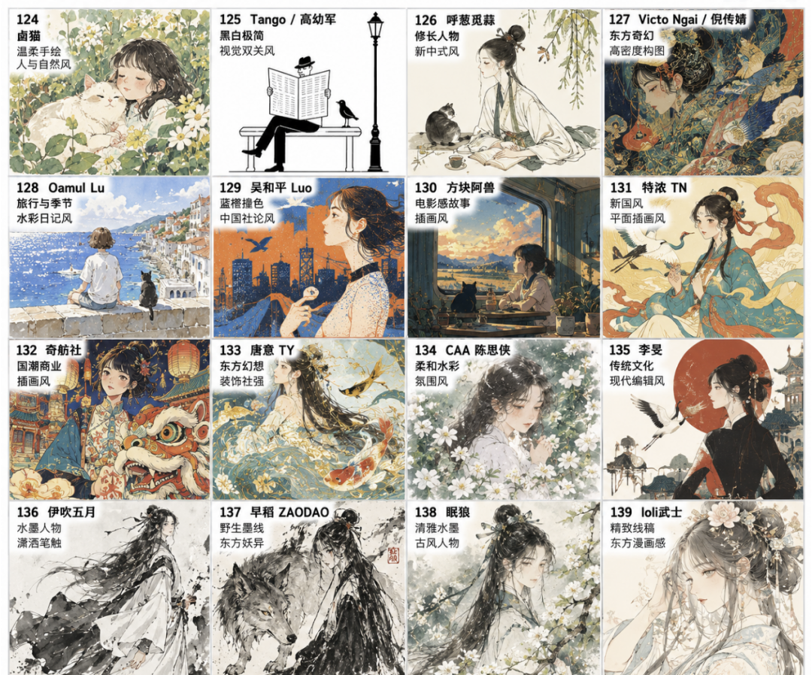
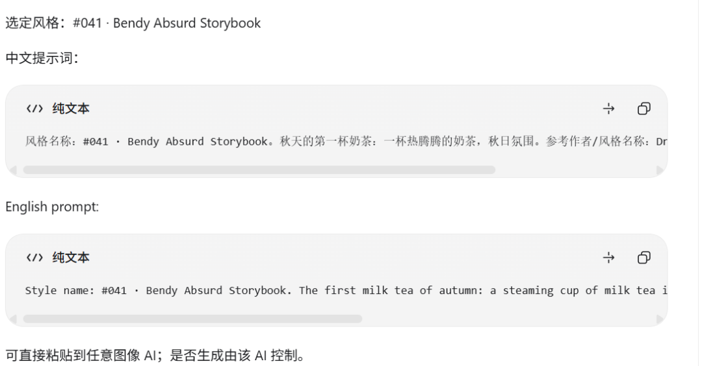

大家好，我是熊叔，今天继续逛GitHub。
今年 AI 生图这块的 Skill 是越来越多了。
前两天刚折腾了几个做配图的，今天又让我挖到了一个手绘风 Skill。
它叫 handraw-style。
这个项目很有趣。
它把 261 种手绘风格整理到一起，每种都配了一个编号。

以后想换画风的时候，也不用再憋治愈一点、手绘一点、文艺一点这样的词了。
看图选择一个号码，然后告诉AI你想要画什么。
这就行了。
目前项目上线没几天，已经拿到 1000+ Star。
看图选一个号码
用这个 Skill，第一步就是先挑画风。
打开项目中的画廊，261 种手绘风格已经按照编号排列好了。
前面A到E，基本上涵盖了常见的几种插画风格。
A 类是国际社论漫画，001～035。

更像报刊杂志里的幽默插画，线条有个性，适合观点、职场、科技类配图。
B类为国际绘本，036-054。

画面偏故事感，人物、场景更柔和，适合生活、亲子、情绪类内容。
C类为现代平面，055～082。

更注重色彩、造型和人物的设计，画面比较简洁，可以用来做封面、海报等。
D类是日本当代插画，083-123。

日系味更明显，人物和日常场景比较多，适合生活、旅行、咖啡店这类主题。
E类是当代中国插画，124-154。

里面还有更多东方人物、生活场景和本土元素，做传统文化、节日、城市生活会更合适。
后面还有通用网感、媒介、地域手绘，以及新补充的一批当代插画。
用的时候不需要研究太细致。
往下翻，喜欢的就记下编号。
比如：
041
以后做文章封面、正文配图、短视频插画等都可以继续用这个号码。
以前看到一张图片觉得好看，还要想一想线条、颜色、画风怎么来描述。
现在这一步就可以省掉了。
喜欢 041 的人就记 041。
而且这个编号还有一个好处。
如果一张图的效果不理想，就不用从头修改Prompt了，可以直接切换到旁边几个风格上继续尝试。
挑到合适的就留着这个号码，下次直接复用。
报编号，再说你想画什么
选好了，直接给 Skill 下命令：
041号风格
主题：秋天的第一杯奶茶
Skill 会找到 041 对应的风格，并且根据主题来生成中英文两种Prompt。

复制提示词，直接发给能画图的大模型就可以了，我这里用的是 Codex。
它的逻辑很容易理解：
编号管画风，主题管内容。
所以同一个编号，可以一直换主题。
比如：
041号风格，主题：程序员坐在电脑前写代码
也可以换一种风格：
236号风格，主题：工程师站在PLC控制柜前调试设备
公众号、小红书这类长期做配图的账号，可以选择2-3个编号固定下来。
以后换选题的时候，主题跟着换，画风不需要重新折腾。
生图时，还会处理参考图跑偏
直接把参考图丢给AI，最常遇到的问题就是画风学到了，原图中的人物、动作、背景也跟着带过来。
handraw-style 会先用风格名称、作者和画面特征来描述，实在压不住的时候才会用上对应的参考图。
就算传图，也会限制 AI 只参考线条、笔触、材质和配色，人物、场景和构图重新生成。
这样就不容易出现“本来只想学画风，结果人物和场景也跟着抄过来”的情况。
怎么用
打开 Codex 输入：
帮我安装 https://github.com/yang0/handraw-style.git
其它类似 Codex 的 Agent 也是一样的操作方式。
然后打开：
handdraw-style-prompter/gallery/index.html
看图选择编号，并把编号和主题发给 Agent：
041号风格
主题：一名程序员正在电脑前调试PLC
它就会整理出对应的双语 Prompt。
如果不想装 Skill，也可以直接把这个仓库当画风图库来用。
找画风、记编号，一样省事。
写在最后
对我来说，它最省事的地方，就是不用再研究画风该怎么描述。
看图、选号、写主题，剩下的交给AI。
如果平时经常做配图的话，可以挑出两三个喜欢的编号固定下来。
开源项目：https://github.com/yang0/handraw-style
平时我会持续地分享一些有趣的开源项目，有兴趣的朋友可以关注一下。
可以回复关键词，找到你想要的项目。